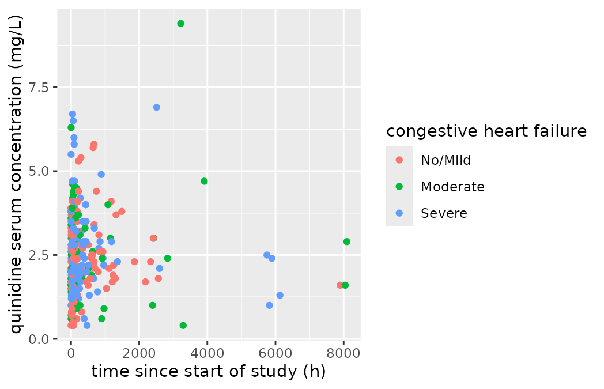

An Introduction to Yamlet
Tim Bergsma
2026-11-11
Source:vignettes/yamlet-introduction.Rmd
yamlet-introduction.RmdMotivation
R datasets of modest size are routinely stored as flat files and retrieved as data frames. Unfortunately, the classic storage formats (comma delimited, tab delimited) do not have obvious mechanisms for storing data about the data: i.e., metadata such as column labels, units, and meanings of categorical codes. In many cases we hold such information in our heads and hard-code it in our scripts as axis labels, figure legends, or table enhancements. That’s probably fine for simple cases but does not scale well in production settings where the same metadata is re-used extensively. Is there a better way to store, retrieve, and bind table metadata for consistent reuse?
Writing Yamlet
yamlet is a storage format for table metadata,
implemented as an R package.
It was designed to be:
- easy to edit
- easy to import
- open-ended
Although intended mainly to document (or pre-specify!) data column
labels and units, there are few restrictions on the types of metadata
that can be stored. In fact, the only real restriction is that the
stored form must be valid yaml. Below, we use
yamlet to indicate the paradigm or package, and
yamlet to indicate stored instances.
Manual Method
Actually, yamlet (think: “just a little yaml”) is a
special case of yaml that stores column attributes in one
record per column. For instance, to store the fact that data for an
imaginary drug trial has a column called ‘ID’, pop open a text file and
write
ID:This in itself is valid yaml! But if you know a label to
go with ID, you can add it:
ID: subject identifierIf you have (or expect) a second column with units, you can add it below.
ID: subject identifier
CONC: concentration, ng/mLA couple of notes here.
- The first thing after a colon must be a space.
- Whatever follows the colon-space is only One Thing.
- That One Thing could be a sequence of Many Things.
To get a sequence, just add square brackets. For instance, above we have said that ‘CONC’ has the label ‘concentration, ng/mL’ but what we really intend is that it has label ‘concentration’ and unit ‘ng/mL’ so we rewrite it as
ID: subject identifier
CONC: [ concentration, ng/mL ]Now label and units are two different things. Notice we have not explicitly named them. Unless we say otherwise, the yamlet package will treat the first two un-named items as ‘label’ (a short description) and ‘guide’ (a hint about how to interpret the values). ‘guide’ might be units for continuous variables, levels (and possibly labels) for categorical values, format strings for dates and times, or perhaps something else.
The yamlet package gives you five ways of
controlling how data items are identified (see details for
?as_yamlet.character). The most direct way is to supply
explicit yaml keys:
ID: [ label: subject identifier ]
CONC: [ label: concentration, guide: ng/mL ]We see that rather complex data can be expressed using only colons,
commas, and square brackets. yaml itself also uses curly
braces to express “maps”, but for purposes here they are
unnecessary.
Note above that we had to add square brackets for ‘ID’ when introducing the second colon (can’t really have two colons at the same level, so to speak). Note also that sequences can be nested arbitrarily deep. We take advantage of this principle to transform ‘guide’ into a set of categorical levels.
ID: [ label: subject identifier ]
CONC: [ label: concentration, guide: ng/mL ]
RACE: [ label: race, guide: [ 0, 1, 2 ]]or more simply (taking advantage of default keys)
ID: subject identifier
CONC: [ concentration, ng/mL ]
RACE: [ race, [ 0, 1, 2 ]]So now we have ‘codes’ (levels) for our dataset that represent races. What do these codes mean? We supply ‘decodes’ (labels) as keys.
ID: subject identifier
CONC: [ concentration, ng/mL ]
RACE: [ race, [ white: 0, black: 1, asian: 2 ]]Elegantly, yaml (and therefore yamlet)
gives us a way to represent a code even if we don’t know the decode,
and a way to represent a decode even though we don’t know the
code. Imagine a dataset is under collaborative development, and we
already know that there are some ‘RACE’ values of 0 but we’re not sure
what they mean. We also know that there will be some ‘asian’ race
values, but we haven’t assigned a code yet. We can write:
ID: subject identifier
CONC: [ concentration, ng/mL ]
RACE: [ race, [ 0, black: 1, ? asian ]]Automatic Method
The whole point of this exercise (and I’m getting a little ahead of myself) is to have some stored metadata that we can read into R and apply to a data frame as column attributes. If typing square brackets isn’t your thing, you can actually do this backwards by supplying column attributes to a data frame and writing them out!
suppressMessages(library(dplyr))
library(magrittr)
library(yamlet)
#>
#> Attaching package: 'yamlet'
#> The following object is masked from 'package:stats':
#>
#> filter
x <- data.frame(
ID = 1,
CONC = 1,
RACE = 1
)
x$ID %<>% structure(label = 'subject identifier')
x$CONC %<>% structure(label = 'concentration', guide = 'ng/mL')
x$RACE %<>% structure(label = 'race', guide = list(white = 0, black = 1, asian = 2))
x %>% as_yamlet %>% as.character %>% writeLines
#> ID: subject identifier
#> CONC: [ concentration, ng/mL ]
#> RACE: [ race, [ white: 0, black: 1, asian: 2 ]]
# or
x %>% as_yamlet %>% as.character %>% writeLines(file.path(tempdir(), 'drug.yaml'))Reading and Binding Yamlet in R
Let’s take advantage of that last example to show how we can read yamlet into R.
meta <- read_yamlet(file.path(tempdir(), 'drug.yaml'))
meta
#> - ID
#> - label: subject identifier
#> - CONC
#> - label: concentration
#> - guide: ng/mL
#> - RACE
#> - label: race
#> - guide
#> - white: 0
#> - black: 1
#> - asian: 2meta is just a named list of column attributes.
decorate() loads them onto columns of a data frame.
x <- data.frame(ID = 1, CONC = 1, RACE = 1)
x <- decorate(x, meta = meta)
decorations(x)
#> - ID
#> - label: subject identifier
#> - CONC
#> - label: concentration
#> - guide: ng/mL
#> - RACE
#> - label: race
#> - guide
#> - white: 0
#> - black: 1
#> - asian: 2If you like, you can skip the external file and decorate directly
with yamlet (instead of, say, structure() like we did
above).
x <- data.frame(ID = 1, CONC = 1, RACE = 1)
x <- decorate(x,'
ID: subject identifier
CONC: [ concentration, ng/mL ]
RACE: [ race, [white: 0, black: 1, asian: 2 ]]
')
decorations(x)
#> - ID
#> - label: subject identifier
#> - CONC
#> - label: concentration
#> - guide: ng/mL
#> - RACE
#> - label: race
#> - guide
#> - white: 0
#> - black: 1
#> - asian: 2Extracting and Writing Yamlet to Storage
We saw earlier that as_yamlet() can pull “decorations”
off a data frame and present them as yamlet. this is
the default behavior of decorations().
decorations(x)
#> - ID
#> - label: subject identifier
#> - CONC
#> - label: concentration
#> - guide: ng/mL
#> - RACE
#> - label: race
#> - guide
#> - white: 0
#> - black: 1
#> - asian: 2write_yamlet() calls as_yamlet() on its
primary argument, and sends the result to a connection of our
choice.
file <- file.path(tempdir(), 'out.yaml')
write_yamlet(x, con = file )
file %>% readLines %>% writeLines
#> ID: subject identifier
#> CONC: [ concentration, ng/mL ]
#> RACE: [ race, [ white: 0, black: 1, asian: 2 ]]Coordinated Input and Output
A useful convention is to store metadata in a file next to the file
it describes, with the same name but the ‘yaml’ extension.
decorate() expects this, and if given a file path to a CSV
file, it will look for a ’*.yaml’ file nearby. To “decorate” a CSV path
means to read it, read its yamlet (if any) and apply the
yamlet as attributes on the resulting data frame.
library(csv)
# see ?Quinidine in package nlme
file <- system.file(package = 'yamlet', 'extdata','quinidine.csv')
a <- decorate(file)
as_yamlet(a)[1:3]
#> - Subject
#> - label: patient identifier
#> - time
#> - label: time since start of study
#> - guide: h
#> - conc
#> - label: quinidine serum concentration
#> - guide: mg/LAnother way to achieve the same thing is with io_csv().
It is a toggle function that returns a path if given a file to store,
and returns a decorated data frame if given a path to read (same for
io_table(), which has all the formatting options of
read.table() and write.table()). The path is
just the path to the primary data, but the path to the metadata is
implied as well.
options(csv_source = FALSE) # see ?as.csv
file <- system.file(package = 'yamlet', 'extdata','quinidine.csv')
x <- decorate(file)
out <- file.path(tempdir(), 'out.csv')
io_csv(x, out)
y <- io_csv(out)
identical(x, y) # lossless 'round-trip'
#> [1] TRUE
file.exists(out)
#> [1] TRUE
meta <- sub('csv','yaml', out)
file.exists(meta)
#> [1] TRUE
meta %>% readLines %>% head %>% writeLines
#> Subject: patient identifier
#> time: [ time since start of study, h ]
#> conc: [ quinidine serum concentration, mg/L ]
#> dose: [ quinidine administered dose, mg ]
#> interval: [ inter-dose interval, h ]
#> Age: [ baseline subject age, year ]
options(csv_source = TRUE) # restoreUsing Yamlet Metadata
Metadata can be used prospectively or retrospectively. Early in the data life cycle, it can be used prospectively to guide table development in a collaborative setting (i.e. as a data specification). Later in the life cycle, metadata can be used retrospectively to consistently inform report elements such as figures and tables.
Example Figure
For example, The yamlet package provides an experimental wrapper for ggplot that uses column attributes to automatically generate informative axis labels and legends.
suppressWarnings(library(ggplot2))
library(dplyr)
library(magrittr)
file <- system.file(package = 'yamlet', 'extdata','quinidine.csv')
file %>%
decorate %>%
filter(!is.na(conc)) %>%
resolve %>%
ggplot(aes(x = time, y = conc, color = Heart)) +
geom_point()
Automatic axis labels and legends using curated metadata as column attributes.
Example Table
The table1 package uses labels and units stored as
attributes to enrich table output. In the example below, we use
resolve() to re-implement guides as units and factor
levels, which is what table1() needs.
suppressMessages(library(table1))
file %>%
decorate %>%
resolve %>%
group_by(Subject) %>%
slice(1) %>%
table1(~ Age + Weight + Race | Heart, .)| No/Mild (N=56) |
Moderate (N=40) |
Severe (N=40) |
Overall (N=136) |
|
|---|---|---|---|---|
| baseline subject age (year) | ||||
| Mean (SD) | 67.1 (8.32) | 67.9 (10.1) | 65.5 (8.48) | 66.9 (8.91) |
| Median [Min, Max] | 68.0 [50.0, 87.0] | 65.5 [46.0, 92.0] | 64.0 [42.0, 88.0] | 66.0 [42.0, 92.0] |
| subject body weight (kg) | ||||
| Mean (SD) | 81.7 (16.9) | 78.6 (13.4) | 77.6 (15.9) | 79.6 (15.6) |
| Median [Min, Max] | 80.0 [41.0, 119] | 80.0 [55.0, 106] | 74.0 [47.0, 112] | 79.0 [41.0, 119] |
| subject race | ||||
| Caucasian | 40 (71.4%) | 26 (65.0%) | 25 (62.5%) | 91 (66.9%) |
| Latin | 13 (23.2%) | 12 (30.0%) | 10 (25.0%) | 35 (25.7%) |
| Black | 3 (5.4%) | 2 (5.0%) | 5 (12.5%) | 10 (7.4%) |
Caveat
It is a well-known problem that many table manipulations in R cause column attributes to be dropped. Binding of metadata is best done at a point in a workflow where few or no such manipulations remain. Else, precautions should be taken to preserve or restore attributes as necessary.
Reminder
Remember to quote a literal value of yes, no, y, n, true false, on, off, or any of these capitalized, or any of these as all-caps. Otherwise they will be converted to TRUE or FALSE per the usual rules for yaml.
Conclusion
The yamlet package implements a metadata storage syntax that is easy to write, read, and bind to data frame columns. Systematic curation of metadata enriches and simplifies efforts to create and describe tables stored in flat files. Conforming tools can take advantage of internal and external yamlet representations to enhance data development and reporting.